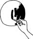

\1\2ğaç\3
Mars ne renktir?

Sarımsı kahverengi.
Ya da kahverengi. Ya da turuncu. Ya da soluk pembe lekelerle haki.
Mars gezegeninin en bilindik özelliklerinden biri, geceleyin gökyüzündeki kırmızı görünüşüdür. Fakat bu kızıllık, gezegenin atmosferindeki tozdan kaynaklanmaktadır. Mars’ın yüzeyi için farklı bir durum söz konusudur.
Mars’tan çekilen ilk fotoğraflar, Neil Armstrong’un Ay’a ayak bastığı meşhur günden yedi yıl sonra Viking I tarafından gönderildi. Bu fotoğraflar, tam da beklediğimiz gibi, koyu renkli kayalarla bezeli ıssız bir kırmızı toprak gösteriyordu.
Bu durum komplo teorisyenlerini şüpheye düşürdü: Bu teorisyenler, fotoğraflar daha tanıdık görünsün diye NASA’nın fotoğraflar üzerinde kasıtlı olarak oynadığını iddia ettiler.
1976’da Mars’a ulaşan iki Viking gezgin robotun üzerindeki fotoğraf makineleri renkli fotoğraf çekmiyordu. Dijital görüntüler gri tonlamayla (siyah-beyaz için kullanılan teknik terim) alınıyor ve daha sonra üç renk filtresinden geçiriliyordu.
“Doğru” renkte bir görüntüyü vermek üzere bu filtreleri ayarlamak son derece güçtür ve bir sanat olduğu kadar bir bilimdir de.
2004’te New York Times, Mars’tan gelen ilk renkli fotoğrafların “pembesinin biraz fazla” olduğunu, ama daha sonraki ayarlamaların Mars’ın yüzeyini sarımsı kahverengi gösterdiğini belirtti.
NASA’nın gezgin robotu Spirit 2004’ten beri Mars’ta faaliyet gösteriyor. En son yayınlanan fotoğraflar, gri-mavi kayalarla ve somon renginde kum lekeleriyle yeşil-kahverengi, çamur renginde bir manzara gösteriyordu.
Biri oraya gidene kadar muhtemelen Mars’ın “gerçek” rengini bilemeyeceğiz.
1887’de, İtalyan gökbilimci Giovanni Schiaparelli, Mars üzerinde uzun düz çizgiler gördüğünü söyledi ve bunlara canali (kanal, oluk) adını verdi. Ama bu kelime İngilizceye, olması gerektiği gibi “channel” (doğal su yolu anlamına gelen kanal, oluk) olarak değil, “canal” (insan eliyle açılmış su kanalı) olarak çevrildi; bu da Mars’ta kayıp bir uygarlık olduğu söylentilerini başlattı.
Suyun Mars’ta buhar halinde ve kutuplardaki buz örtüsünde buz olarak varolduğu düşünülür; ama daha güçlü teleskoplar geliştirildiğinden bu yana, Schiaparelli’nin kanallarının varlığına dair hiçbir kanıt bulunamadı.
Mars’ın Arapçası Kahire’dir (al-Q¯ahirah).